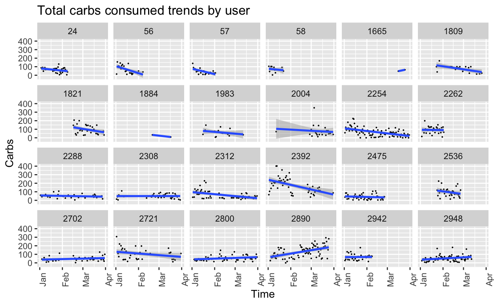
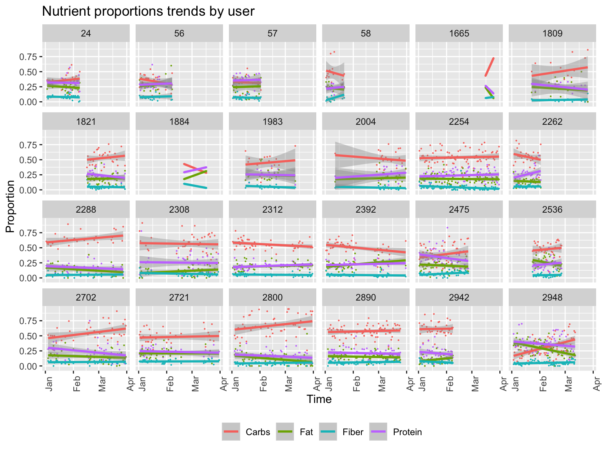
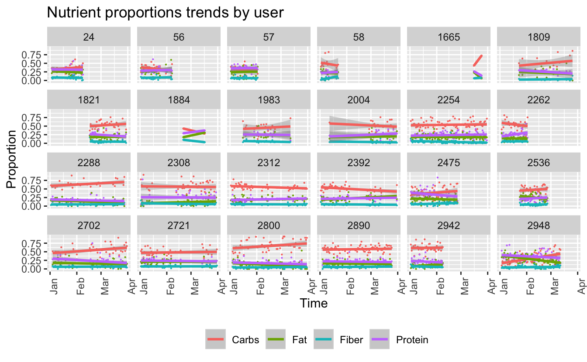
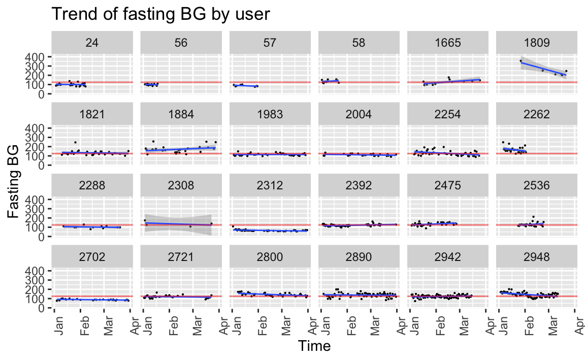
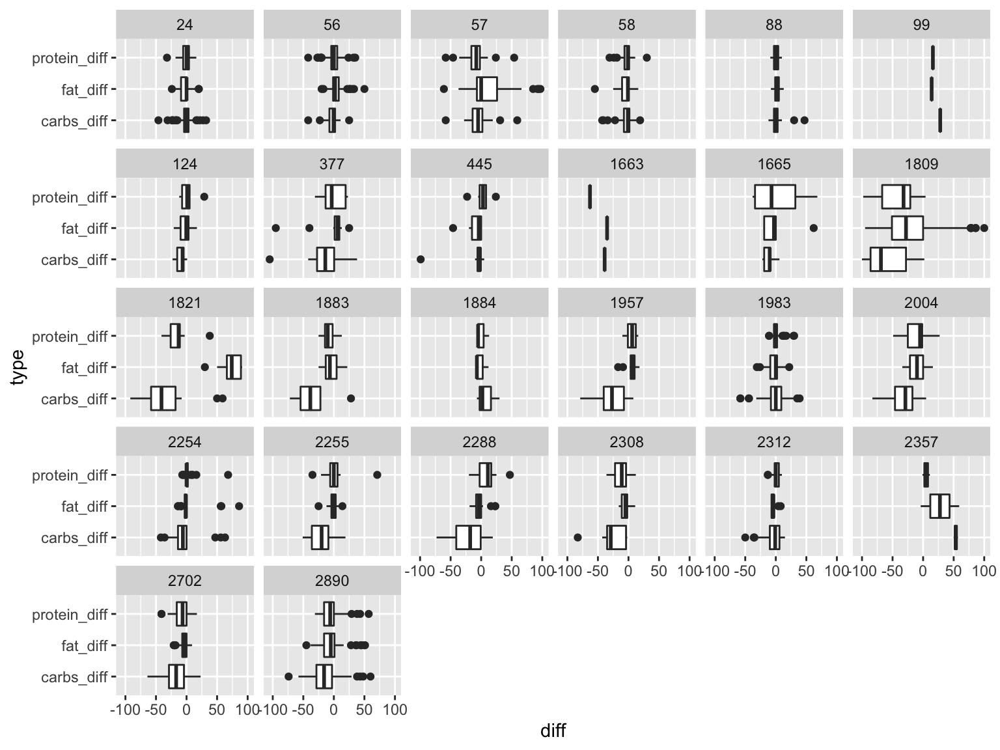

Chapter 7 Appendix
meals.selected %>%
mutate(eaten_at_date = as.Date(eaten_at, tz = "EST")) %>%
filter(eaten_at_date <"2019-04-01" & !is.na(carbs_eval)) %>%
group_by(user_fct, eaten_at_date) %>%
summarise(sum_by_day = sum(carbs_eval)) %>%
ggplot(aes(x=eaten_at_date, y=sum_by_day))+
geom_point(size=0.1)+
geom_smooth(method = "lm")+
facet_wrap(~user_fct, ncol=6) +
labs (
title = "Total carbs consumed trends by user",
x = "Time",
y = "Carbs"
) +
theme(
axis.text.x = element_text(angle = 90)
)
meals.selected %>%
mutate(eaten_at_date = as.Date(eaten_at, tz = "EST")) %>%
filter(eaten_at_date <"2019-04-01" & !is.na(calories_eval)) %>%
group_by(user_fct, eaten_at_date) %>%
summarise(
sum_carbs = sum(carbs_eval),
sum_protein = sum(protein_eval),
sum_fat = sum(fat_eval),
sum_fiber = sum(fiber_eval),
total = sum_carbs+sum_protein+sum_fat+sum_fiber,
Carbs=sum_carbs/total,
Protein=sum_protein/total,
Fat=sum_fat/total,
Fiber=sum_fiber/total
) %>%
gather(key = "Nutrient", value = "Proportion", Carbs, Protein, Fat, Fiber) %>%
#print_df() %>%
ggplot()+
geom_point(aes(x=eaten_at_date, y=Proportion, color = Nutrient), size=0.1) +
geom_smooth(aes(x=eaten_at_date, y=Proportion, color = Nutrient), method = "lm") +
facet_wrap(~user_fct, ncol=6) +
labs (
title = "Nutrient proportions trends by user",
x = "Time",
y = "Proportion"
) +
guides(color = guide_legend(nrow = 1), fill = guide_legend(nrow = 1)) +
theme(
axis.text.x = element_text(angle = 90),
legend.title = element_blank(),
legend.position="bottom",
)
bg_readings.all %>%
filter(user_fct %in% selected_user_ids) %>%
mutate(hour = format(as.POSIXct(time, format="%H:%M:%S"),"%H")) %>%
group_by(user_fct, hour) %>%
summarise(avg_bg = mean(bg)) %>%
ggplot(aes(x=hour, y=avg_bg))+
geom_point(size=0.3)+
scale_x_discrete(breaks=c(0, 6, 12, 18, 24)) +
facet_wrap(~user_fct, ncol=6) +
labs(
title = "Average BG Level by Hour",
x="Hour",
y="Average BG Level"
) +
theme(
axis.text.x = element_text(angle = 90),
)
Have the ability of users to estimate nutrients change overtime with the use of the app?
meals.imputed %>%
filter(!is.na(calories_eval) & !is.na(calories_user)) %>%
mutate(
calories_diff = calories_user - calories_eval,
carbs_diff = carbs_user - carbs_eval,
protein_diff = protein_user - protein_eval,
fat_diff = fat_user - fat_eval,
fiber_diff = fiber_user - fiber_eval
) %>%
mutate(eaten_at_date = as.Date(eaten_at, tz = "EST")) %>%
filter(eaten_at_date <"2019-04-01") %>%
group_by(user_fct, eaten_at_date) %>%
summarise(carbs_diff = mean(carbs_diff)) %>%
ggplot(aes(x=eaten_at_date, y=carbs_diff))+
geom_point(size=0.1) +
geom_smooth(method = "lm", na.rm=TRUE, size=0.5) +
facet_wrap(~user_fct, ncol=6, scales = "free_y") +
labs (
title = "Trend of carbs estimation error",
x = "Time",
y = "Carbs user estimation error"
) +
theme(
axis.text.x = element_text(angle = 90)
)
meals.imputed %>%
filter(!is.na(calories_eval) & !is.na(calories_user)) %>%
mutate(
calories_diff = calories_user - calories_eval,
carbs_diff = carbs_user - carbs_eval,
protein_diff = protein_user - protein_eval,
fat_diff = fat_user - fat_eval,
fiber_diff = fiber_user - fiber_eval
) %>%
gather(key = "type", value = "diff", carbs_diff, protein_diff, fat_diff) %>%
ggplot() +
geom_boxplot(aes(x = type, y = diff)) +
coord_flip() +
facet_wrap(~user_fct, ncol = 6)
7.1 Sleep
sleep = read_csv(file.path(raw_data_path, "1983", "sleep.csv"), col_types = cols()) %>%
mutate(time = as.timestamp(time))Questions: * does the amount of sleep impact the first BG reading in the day (pre-breakfast, important!) (the very first pre-breakfst BG reading is considered fasting and is a true-ish representation of glycemic control (how bad is your diabetis)). * Does amount (or quality of sleep) have an impoact on pre-breakfast BG (<- new measure). * Urban mith - the quality/amount of sleep may change how people respond to meals, e.g. for the same nutritional breakdown of a meal BG_impoact will be different.
- Fat and protein mediate the impact of carbohidrate. How to show this (focus on the visualization, data may be lacking the signal)